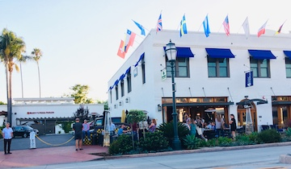
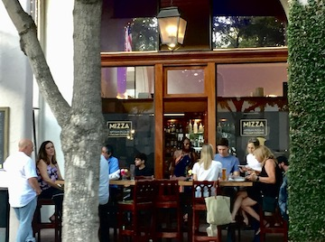
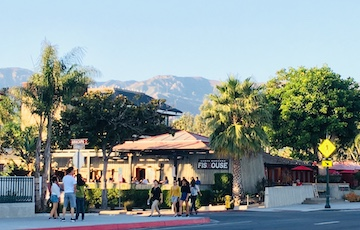
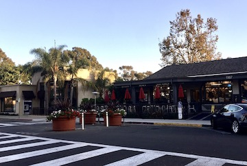
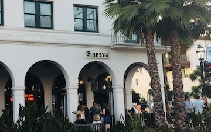
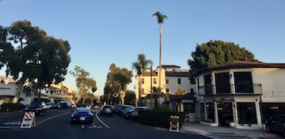
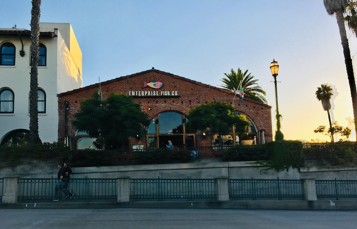

Local Favorites
Dining with a View!
     Top Notch Cuisine!
There are many great food places and options to try when in Santa Barbara. There are Asian restaurants, Italian restuarants, Hawaiian steakhouses, Indian restaurants, vegan cafes, smoothie joints, Mexican taquerias, French bistros, coffeehouses, and more to try!
My Favorite Restaurants
Image Below: Enterprise Fish Co., Seafood Restaurant
Due to Santa Barbara being located right on the central coast of California, you know we have amazing, local seafood restaurant! One that I have been going since I was a little girl is the Fish Enterprise. They have been a local favorite for 37 years now, service fresh and whole foods made from scratch everyday. There are many options such as fresh lobster, clam chowder bread bowls, fresh steamed clas and oysters, you name it! My favorite thing to grab before leaving the restuarant is always the fresh salt water taffy!
Image Below: Los Agaves, Mexican Restaurant

Santa Barbara is an old Spanish style town, covered with some of the best, most authentic Mexican restaurants. My all time favorite place to eat at is Los Agaves. This award-winning restaurant is always the first place I stop at when I am in town. Their menu items include fresh ceviche, molcajetes, fajitas, tacos, homemade sopes and so much more! My mouth is drooling just thinking about this place! This place will always be my hand down favorite!